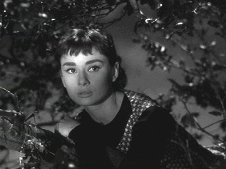

| Sabrina/B+,B+ |
| Paramount/1954/112/FS 1.33/BW |
Audrey Hepburn never looked better than in Sabrina, and she is
indeed the center piece of this delightful romantic triangle.
Set on the Gold Coast of Long Island, Sabrina unfolds in the
opulent settings of indoor tennis courts, moonlit parties and a stable of polished cars and
servants. Sabrina Fairchild is the chauffeur's daughter in the fabulously wealthy Larrabee
household. She's carries a crush on the younger Larrabee son, reprobate playboy David, that glows
like the blush on her youthful cheeks. But to David, Sabrina is nothing more than an unripe apple
hanging on a tree. Poppa Fairchild wisely sends Sabrina off to Paris to a culinary school where she
can forget David and learn a useful trade.
 |
| Unripe fruit perched in a tree. ©Paramount |
Paris teaches Sabrina a bit more than how to break an egg. When she
arrives back to Long Island two years later she is infused by the sophisticated sauce of Paris and
with newly honed womanly charms blossoming like flowers advertising their fresh beauty. David is an
easy mark as he falls instantly for the beautifully coiffed and dressed Sabrina. But older brother
Linus has other ideas for David and is not about to Sabrina inadvertently sabotage his latest mega
merger. Linus decides to turn on his own brand of charm to divert Sabrina from prize catch David.
Billy Wilder helms the screenplay by playwright Samuel Taylor, Ernest
Lehman, and himself with the breezy pacing of a director confident in his material. Sabrina is
buoyed by Wilder's light touch for comedy and romance. The timing is terrific.
What a wonderful cast! Hepburn is simply a dream sandwiched between William
Holden and Humphrey Bogart playing David and Linus. Holden turns on personality with consummate
ease, but the usually dower Bogart is the secret gem of Sabrina. Bogie shows a knack for
deadpan charm himself and while undermining leading man Holden is no easy trick, Bogart, abetted by
wilder and a rather fickle Sabrina, works his magic.
It's all presented in glorious black and white. Charles Lang handles the
lustrous photography and it's been transferred to DVD with great polish. Outstanding contrast range
and sharp images reproduce the sparkling tale in a lively DVD. Deep, rich blacks, excellent subtle
indoor lighting and moonlight that makes the screen glow are hallmarks of this fine DVD. The mono
sound is crystal clear and every juicy line of dialogue is easily understood. The strains of
"Isn't it Romantic" that highlight the party sequence are light as air. Sabrina is
a classic brought to DVD with class. A short about the history of Sabrina is included that
adds to the charming experience.
|
|
|
|

Selections from the Feature Archive
include articles on Akira Kurosawa, Frank
Darabont, Blonde Bimbos, Hollywood Street Gangs, or Vietnam: The
Hollywood Pariah, and many more....
Roman
Holiday
Join the editor and his family on a trip through Roman movie sites in this unusual feature.

The
Movie Poster Archive includes extensive poster images from the films of stars like Susan Hayward,
Kirk Douglas, Katharine Hepburn and many more. Our featured star is William Holden.

DVD packaging can be the bane of the collector. Click on Rants and
Raves for more.

Annie Get Your Gun/A,A-
Irving Berlin's brilliant musical gem is polished and preserved on this Warner DVD release. An
explosion of music, song, dance and color.

 Gary Morris's insightful publication Bright Lights
Film Journal turns the celluloid in films from a unique perspective. Click on the image above
for more pure movie views. Gary Morris's insightful publication Bright Lights
Film Journal turns the celluloid in films from a unique perspective. Click on the image above
for more pure movie views.
MRQE
Find reams of movie and DVD reviews at the Movie Review
Query Engine, a index of reviews appearing on the Internet.
|